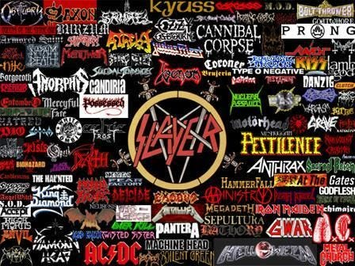
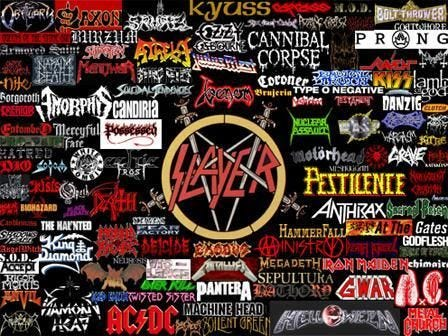

Enjoy hearing instruments take the spotlight? Do you like when people pour their energy into their song and performance?
Well you've chosen the right genre, because metal is where the music takes your focus and transports you to a soundscape of
heavy drum beats and guitar solos that usher waves of frisson, not to mention lyrics that range from melancholic to gutteral
screaming. Whichever end of this spectrum you find yourself, we guarantee we'll have something that will scratch that itch!
The metal genre is known stereotypically as the genre with angry lyrics, loud drums and too much guitar. Those songs exist of course, but it's more in-depth than that. Metal is a genre that musicians and vocalists alike pour their emotions into by the bucket. This is done through vocals that are sung with lulls of sadness, anger or love, complimented by guitar riffs that give each song character and backed with drum beats to tie the whole thing together. The most common instrument in metal is electric guitar, almost acting like a second set of vocals for the listener to digest on repeated listenings. These are usually combined with drums to add a noise and unique tempo, followed
 
